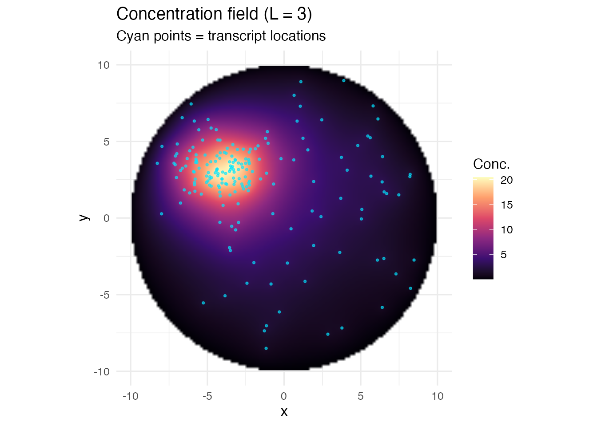
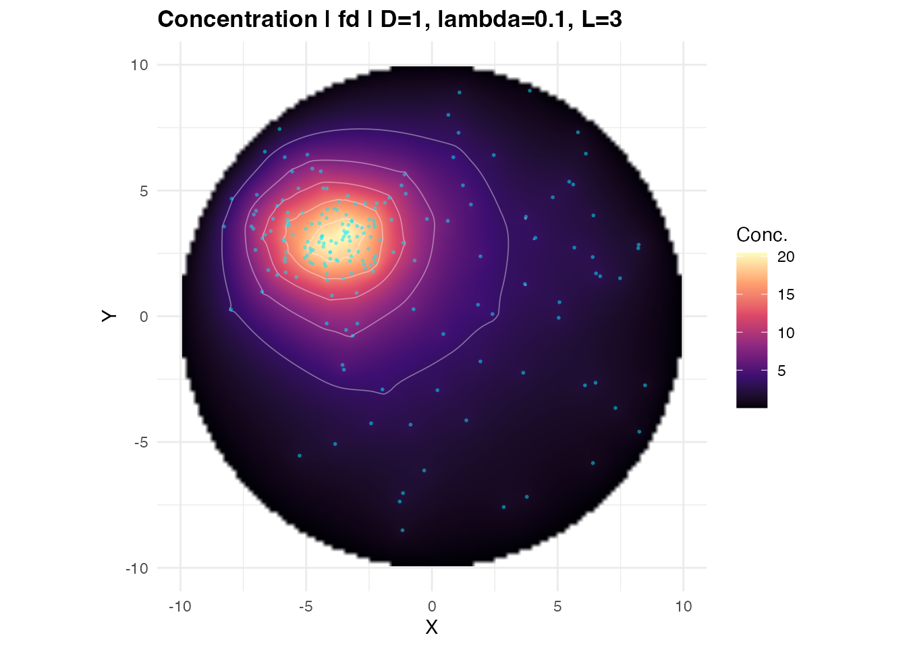
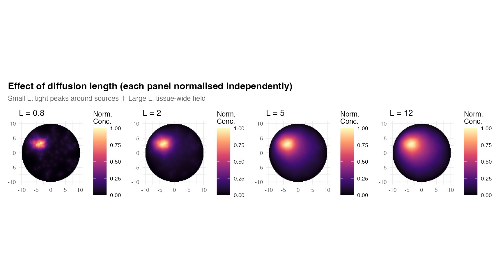

What is a concentration field?
Spatial transcriptomics gives us discrete detections: a list of (x, y) coordinates where individual mRNA molecules were found. But many biological processes operate through continuous gradients — ligand concentrations, cytokine fields, metabolite distributions. TissueField bridges that gap.
Given a set of transcript coordinates and a tissue mask polygon,
estimate_concentration_field() computes the
steady-state concentration that those transcripts would
produce as diffusing point sources inside the tissue:
The output is a dense numeric matrix — a spatial field — defined over
the tissue with NA outside it.
The single most important parameter is the diffusion length:
is roughly the radius of influence of one transcript. Set it to match the biological scale of interest.
A first example
We start by creating a simple circular tissue and placing synthetic transcripts inside it.
library(TissueField)
library(sf)
library(ggplot2)
set.seed(2024)
# Circular mask (radius = 10, centre = origin)
theta <- seq(0, 2 * pi, length.out = 201)
circle_xy <- cbind(10 * cos(theta), 10 * sin(theta))
circle_xy[201, ] <- circle_xy[1, ] # close exactly (avoid floating point gap)
mask <- st_sfc(st_polygon(list(circle_xy)))
# 200 transcripts: focal cluster at (-4, 3) and uniform background
tc_cluster <- data.frame(x = rnorm(120, -4, 1.5), y = rnorm(120, 3, 1.2))
tc_bg <- data.frame(x = runif(80, -9, 9), y = runif(80, -9, 9))
# keep only those inside the mask
inside_fn <- function(d) {
as.logical(st_within(st_as_sf(d, coords = c("x","y")), mask, sparse = FALSE)[,1])
}
tc <- rbind(tc_cluster[inside_fn(tc_cluster), ], tc_bg[inside_fn(tc_bg), ])Compute the concentration field
Call estimate_concentration_field() with a moderate
diffusion length. Here we set L = 3 directly using the
diffusion_length argument, which is the simplest way to
control spatial scale.
res <- estimate_concentration_field(
mask = mask,
transcript_coords = tc,
diffusion_length = 3, # L = 3 spatial units
D = 1, # sets amplitude (shape depends only on L)
method = "fd", # finite-difference, recommended
grid_resolution = 128L,
verbose = TRUE
)## ============================================================
## estimate_concentration_field
## ============================================================
## Method: fd | D: 1 | lambda: 0.1 | L: 3 | N: 128 x 128
## BC: dirichlet | solver: direct
## ------------------------------------------------------------
## Transcripts: 191 used (0 external excluded)
## Rasterizing 128x128 grid...
## Inside-mask cells: 11452 (69.9%)
## Sparse system: 11452x11452, 56780 nnz
## Solve: 0.07s | Total: 0.50s | Range: [0.03457, 20.46]
## ============================================================Inspect the return value
names(res)## [1] "field" "x" "y" "hx" "hy"
## [6] "mask" "sources" "params" "diagnostics"
dim(res$field) # N x N matrix## [1] 128 128
res$params$diffusion_length## [1] 3
res$diagnostics## $n_transcripts_total
## [1] 191
##
## $n_transcripts_used
## [1] 191
##
## $n_transcripts_external
## [1] 0
##
## $n_cells_inside_mask
## [1] 11452
##
## $elapsed_total_s
## elapsed
## 0.501
##
## $elapsed_solve_s
## elapsed
## 0.075Visualise with field_to_df() and ggplot2
field_to_df() unpacks the matrix into a tidy data
frame:
df <- field_to_df(res) # inside_only = TRUE by default
head(df)## x y field inside source
## 567 -1.5734375 -9.854688 0.05388863 TRUE 0
## 568 -1.4078125 -9.854688 0.07462319 TRUE 0
## 569 -1.2421875 -9.854688 0.08377106 TRUE 0
## 570 -1.0765625 -9.854688 0.08781222 TRUE 0
## 571 -0.9109375 -9.854688 0.08905466 TRUE 0
## 572 -0.7453125 -9.854688 0.08856328 TRUE 0
ggplot(df, aes(x = x, y = y, fill = field)) +
geom_raster(interpolate = TRUE) +
geom_point(data = tc, aes(x = x, y = y),
inherit.aes = FALSE, color = "#00e5ff",
size = 0.6, alpha = 0.6) +
scale_fill_viridis_c(option = "magma", name = "Conc.") +
coord_equal() + theme_minimal(base_size = 12) +
labs(title = "Concentration field (L = 3)",
subtitle = "Cyan points = transcript locations")
Or use the built-in plot function
plot_concentration_field() wraps the same ggplot2 code
with sensible defaults:
plot_concentration_field(res, transcript_coords = tc,
show_contours = TRUE, n_contours = 6)
Understanding diffusion length
The field shape is entirely determined by
.
Use sweep_diffusion_length() to compare several values at
once:
library(patchwork)
L_vals <- c(0.8, 2, 5, 12)
plots <- lapply(L_vals, function(Lv) {
res_l <- estimate_concentration_field(
mask, tc, diffusion_length = Lv, D = 1,
method = "fd", grid_resolution = 128L, verbose = FALSE
)
df_l <- field_to_df(res_l)
# normalise each panel independently for visual comparison
rng <- range(df_l$field, na.rm = TRUE)
df_l$field_norm <- (df_l$field - rng[1]) / diff(rng)
ggplot(df_l, aes(x = x, y = y, fill = field_norm)) +
geom_raster(interpolate = TRUE) +
scale_fill_viridis_c(option = "magma", limits = c(0, 1),
name = "Norm.\nConc.", na.value = "transparent") +
coord_equal() + theme_minimal(base_size = 9) +
labs(title = sprintf("L = %g", Lv), x = NULL, y = NULL)
})
wrap_plots(plots, nrow = 1) +
plot_annotation(
title = "Effect of diffusion length (each panel normalised independently)",
subtitle = "Small L: tight peaks around sources | Large L: tissue-wide field",
theme = theme(plot.title = element_text(face = "bold", size = 12),
plot.subtitle = element_text(size = 9, color = "grey40"))
)
Practical guidance:
- Set to 10–20% of the typical inter-cluster distance to get fields that peak at sources and decay between them.
- Larger produces smoother, more “territorial” fields where influence extends across the whole tissue.
-
only affects the amplitude
(),
not the spatial pattern. See
vignette("parameter-tuning")for details.
Next steps
-
vignette("solver-guide"): compare the three solvers (fd,green,kde) and boundary conditions. -
vignette("parameter-tuning"): deep dive into , , , UMI weighting, and grid resolution. -
vignette("complete-reference"): full 12-section reference covering all features.